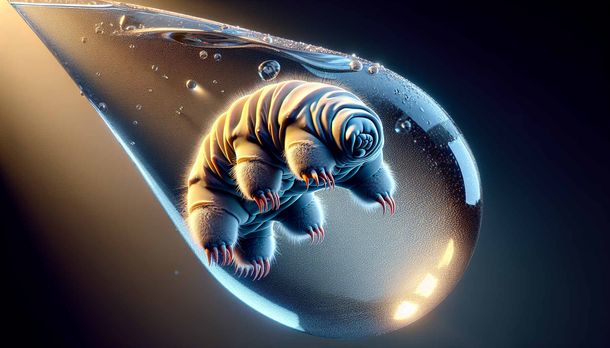
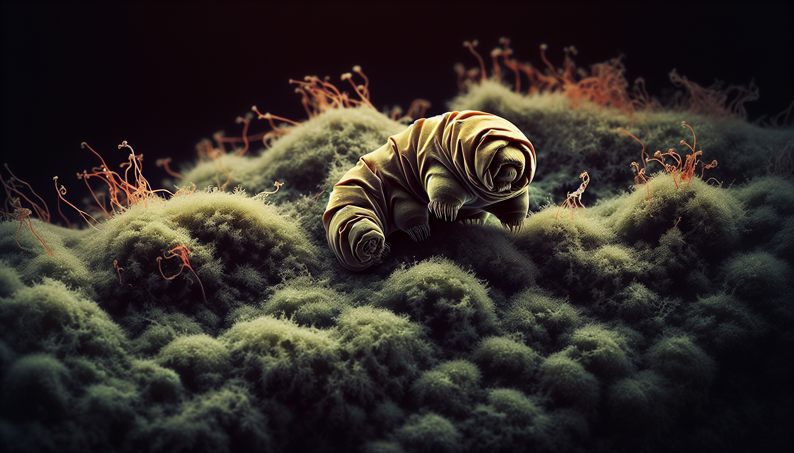
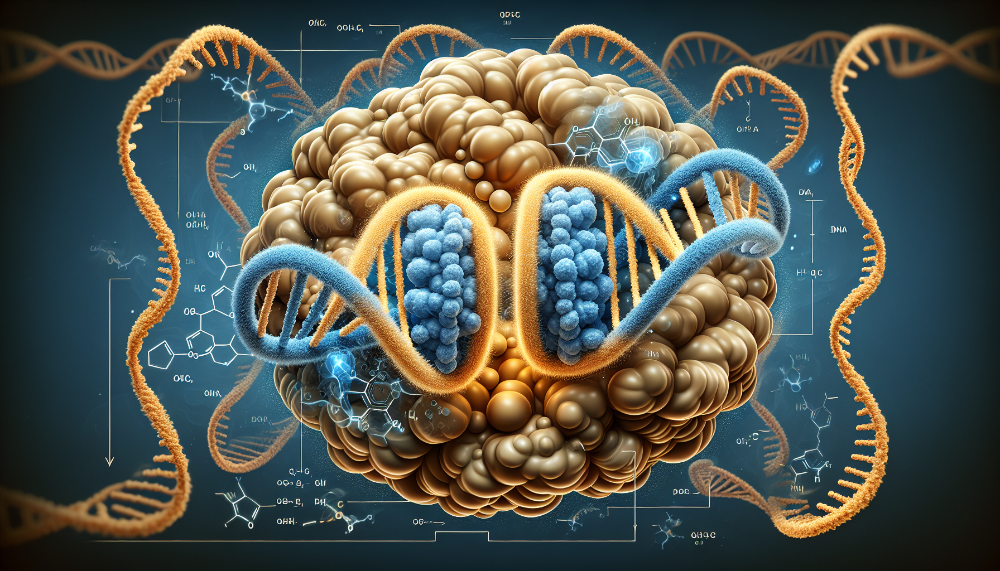
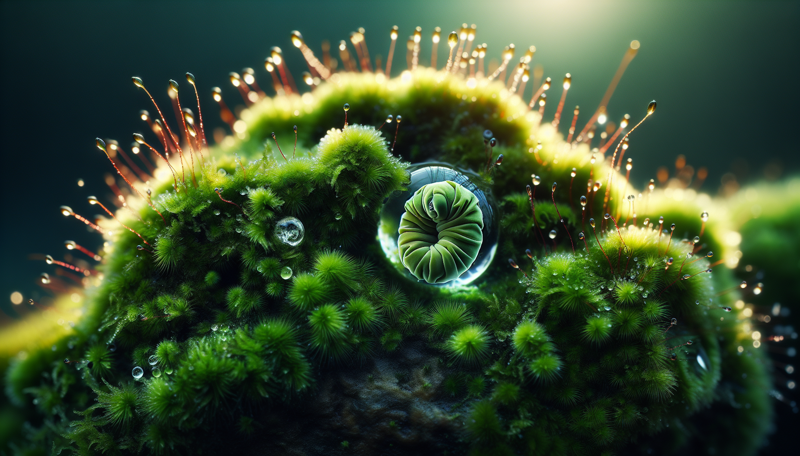

Eight legs, bear-like claws, and a survival record that defies biology. These microscopic marvels have survived the vacuum of space, frozen for decades, and would likely outlive humanity itself.

A tardigrade in its active state, showing its characteristic eight legs and clawed feet
Tardigrades (Tardigrada), first described in 1773 by German pastor J.A.E. Goeze who called them kleiner Wasserbär ("little water bear"), are microscopic animals measuring 0.1 to 2.1 millimeters. Over 1,300 species have been discovered worldwide, inhabiting environments from the deepest oceans to Antarctic ice, mountain peaks, and even your backyard moss.
Despite their need for water, terrestrial tardigrades thrive in mosses and lichens — hence the nickname "moss piglets." Their bodies are segmented with four pairs of legs ending in claws, a tough cuticle similar to insect exoskeletons, and a surprisingly complex internal structure including a complete digestive system and a well-developed nervous system.
Tardigrades are found in virtually every aquatic environment on Earth — freshwater, marine, and terrestrial habitats with moist conditions. Their mouthpart, called a buccopharyngeal apparatus, acts like a tiny vacuum, sucking in algae, bacteria, fungal cells, or even small invertebrates like rotifers and nematodes.

A tardigrade in anhydrobiosis, curled into a protective "tun" shape
When environmental conditions turn hostile, tardigrades can enter a state of suspended animation called cryptobiosis. The most studied form is anhydrobiosis — a response to dehydration.
The process begins with the tardigrade shrinking its body, forming numerous folds to reduce surface area, and curling into a ball called a tun. This reduces water loss by about 50% and protects internal organs during drying. All free water is replaced with bioprotectants like trehalose, which stabilizes proteins and DNA.
These tiny animals withstand conditions that would destroy almost any other life form:

Dsup (damage suppression protein) binds to chromatin and forms a protective cloud around DNA
UC San Diego researchers discovered that tardigrades possess a unique protein called Dsup (damage suppression protein) found nowhere else in nature. When Dsup binds to chromatin (the form of DNA inside cells), it forms a molecular shield that protects DNA from hydroxyl radicals generated by X-rays.
The researchers believe Dsup's primary evolutionary purpose wasn't radiation protection but rather survival during dehydration in mossy habitats. When moss dries up, harmful hydroxyl radicals form, and Dsup shields the tardigrade's genetic material.
Tardigrades deploy an arsenal of protective molecules during cryptobiosis:
Tardigrades have survived exposure to the vacuum of space, cosmic radiation, and solar UV
In 2007, dehydrated tardigrades became the first animals to survive a combined exposure to space vacuum, cosmic radiation, and UV radiation during the FOTON-M3 mission. Over 68% of protected tardigrades were successfully rehydrated and went on to produce viable embryos.
Tardigrades have continued to be subjects of space research. In 2021, they were sent to the International Space Station to study adaptation to microgravity. The Israeli spacecraft Beresheet was carrying thousands of tardigrades when it crash-landed on the moon in 2019; later experiments suggest they likely died on impact due to ballistic shock rather than environmental conditions.

Tardigrades thrive in moist moss and lichen environments, where they feed on microorganisms
While the extreme survivability of tardigrades captures headlines, their everyday ecology is equally fascinating. In mosses and lichens, tardigrades play a role in microbial food webs, grazing on algae, bacteria, and small protists. They're most abundant in environments with periodic wet-dry cycles, precisely because their cryptobiosis adaptation gives them an advantage over organisms that cannot survive desiccation.
Understanding tardigrade biology isn't just intellectual curiosity — it has practical implications:
Tardigrades raise profound questions about the nature of life itself. Their ability to suspend metabolism for decades and then revive challenges our definitions of life versus death. If an organism can repeatedly cross the boundary between active life and near-inertness, what does that say about the essential qualities we associate with being "alive"?
They also reshape our understanding of planetary boundaries for life. If tardigrades can survive the vacuum of space and extreme radiation, they may be capable of interplanetary travel on meteorites, offering a plausible mechanism for panspermia — the idea that life exists throughout the universe and spreads from planet to planet.
Tardigrades are a humbling reminder of nature's ingenuity. At a time when humanity grapples with existential threats like climate change and seeks to explore other worlds, these micro-animals demonstrate that life is far more resilient and adaptable than we often assume. Their molecular armor — Dsup and its companion bioprotectants — may hold keys to medical breakthroughs and deeper understanding of life's boundaries.
And perhaps most remarkably, tardigrades are ordinary inhabitants of the mossy corners of our world. You could step on a patch of lichen right now and crush hundreds of them without ever knowing you'd encountered one of Earth's most extraordinary survivors.